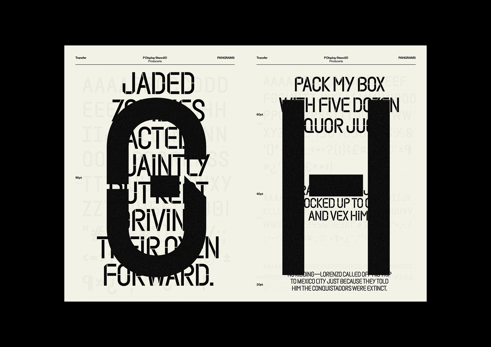
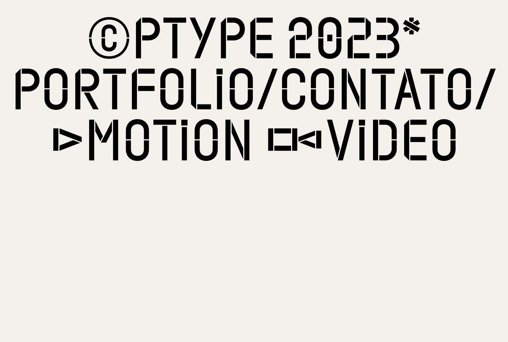
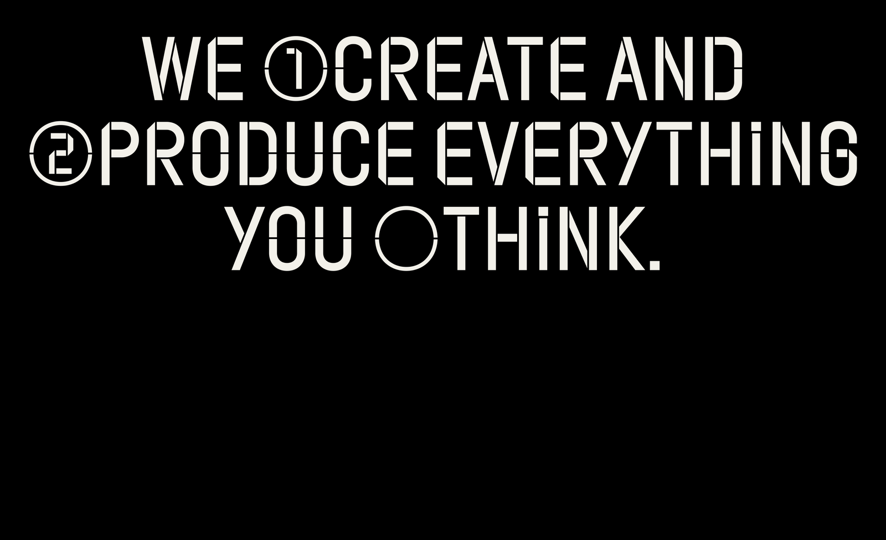
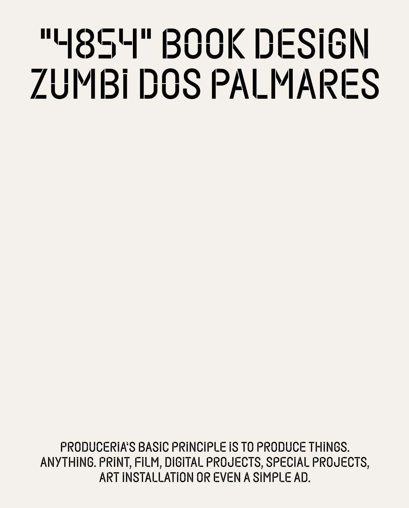

Inari Type
Information
Article
Rtype
The fundamental principle of Produceria is to create things–all sorts of things. It could be printed materials, films, digital projects, special endeavors, artistic installations, or even a straightforward campaign.
Created based on this concept, we've designed a distinctive typography that includes more than 343 characters. This extensive character set allows us to design and deliver the diverse creative works that are at the heart of Produceria.
Typography:
Caio Kondo
Graphic Design Studio:
Tall,Piet
2022
Services:
Logotype & Typeface




